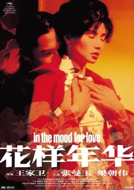

Hours before the Cannes premiere in 2000, Wong Kar-wai was still cutting the film — he never works from a finished script, and this one had already taken over a year to shoot, with the score and edit still shifting right up to the screening. Tony Leung Chiu-wai won Best Actor at that festival for the role. But most people met this film through this image first: Maggie Cheung turned toward camera, one hand resting near the collar of her qipao, Tony Leung dissolved into shadow behind her, his face barely legible. The photographer and designer was Wing Shya — this was the film that made him Wong Kar-wai's in-house set photographer and art director for the rest of his career, and this single image did more to define the film's public memory than almost any scene inside it.
What holds up under a second look isn't the figures themselves — it's the line of shadow that cuts cleanly between them. Cheung sits at the visual center, turned roughly forty-five degrees toward the camera, her fingers stopped near her high collar as if guarding something instinctively. Leung is pressed into a narrow strip of shadow at the far left edge, reduced to a soft, barely legible profile. They share one frame and stand physically close, yet the lighting sorts them into two separate worlds — which is exactly the visual grammar of the film itself. Chow Mo-wan and Su Li-zhen are rarely shown together in the same clear light; stair rails, doorframes, taxi windows, sheets of rain keep splitting them apart, letting closeness and separation hold true at once.
That tension — near in space, divided by light — does more work than a straightforward embrace would. It tells you, before the film even starts, that this isn't a story that resolves into an easy hug.
The poster's ground is a warm gradient running from amber into terracotta red, wrapping Cheung's whole figure in a glow that reads as both warm and unresolved. Leung's side is crushed down into a near-black indigo shadow — the two zones sit close to complementary on the color wheel, almost directly opposite each other. This isn't an incidental lighting choice; it's the signature technique cinematographers Christopher Doyle and Mark Lee Ping Bing return to across the entire film. Hallway bulbs, streetlamps, neon signage — practical light sources that frequently throw warm and cool light onto the same face at once, so you can see a character's emotional temperature directly on their skin. This poster just compresses that lighting logic, used for the whole runtime, into a single still frame.
Warm light goes to the female lead — exposed, vulnerable, facing the viewer. Cool shadow goes to the male lead — receding, withheld, turned away. The color temperature alone is telling you about the relationship, more directly than any line of dialogue could.
William Chang — credited as production designer, costume designer, and editor — made over twenty different qipaos for Cheung to wear across a film under two hours long, one of the most famous single-character wardrobes in film history. Every print was calculated to either clash against or blend into the wallpaper and curtains of that scene's set, turning the costume itself into an extension of the production design rather than something merely worn on top of it. The dress in this poster, dark red with a fine floral print, has a collar cut so high and tight it forces the actress to lift her chin and hold her spine straight — the cut itself performs restraint. It isn't a garment built for ease of movement; it's closer to a second skin that dictates how a body is allowed to stand and move.
The film leans heavily on slow motion, set against Shigeru Umebayashi's recurring waltz theme — the two leads passing on a staircase, walking side by side down a rain-slicked alley, all stretched into something close to a wordless dance. The stillness of this poster reads like the residue left behind by one of those slowed-down moments.
The most widely cited fact about In the Mood for Love is that its two leads never kiss on screen. After discovering their spouses are having an affair with each other, Chow and Su grow closer — to the point of rehearsing how the affair might have started, playing each other's spouse to work out what happened, redirecting all their intimacy into a series of re-enactments that never quite land on themselves. This poster is that entire emotional logic compressed into a single image: two people sharing a frame without meeting each other's eyes, without touching — Cheung's hand rests on her own collar, not reaching toward him. That restraint, the ache of "this close, and still nothing happens," is what keeps people returning to this film.
Withholding, rather than showing, is what makes an audience lean in and fill in what's missing themselves — which is why this poster still lands even for people who've never seen the film.
Wong Kar-wai (b. 1958) is a Hong Kong director also known for Chungking Express, Days of Being Wild, and Happy Together, famous for shooting without a finished script and rewriting on set. In the Mood for Love took over a year to shoot, with score and edit still changing right up to its 2000 Cannes premiere, where Tony Leung Chiu-wai won Best Actor for the role. Cinematography is credited to Christopher Doyle, Wong's longtime collaborator, and Mark Lee Ping Bing, who completed the second half of the shoot after Doyle stepped away from the production. William Chang — production designer, costume designer, and editor — built and fitted the film's twenty-plus qipaos on Cheung directly.
The poster's photography and graphic design are by Wing Shya, who became Wong Kar-wai's regular set photographer and art director starting with this film, later working on 2046 and other projects. His grainy, intimate, letter-like visual style shaped how the film is remembered publicly as much as the film itself did. The film and poster are © Block 2 Pictures / Jet Tone Production; the image used here is sourced from Wikipedia for commentary and appreciation, and the analysis in this piece is the author's own.